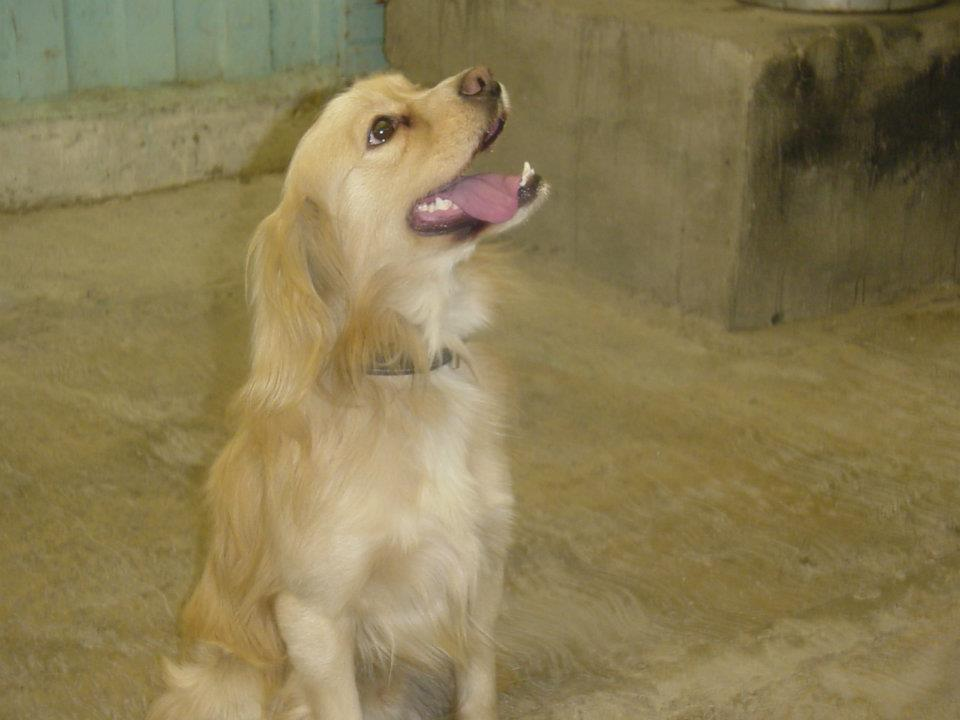
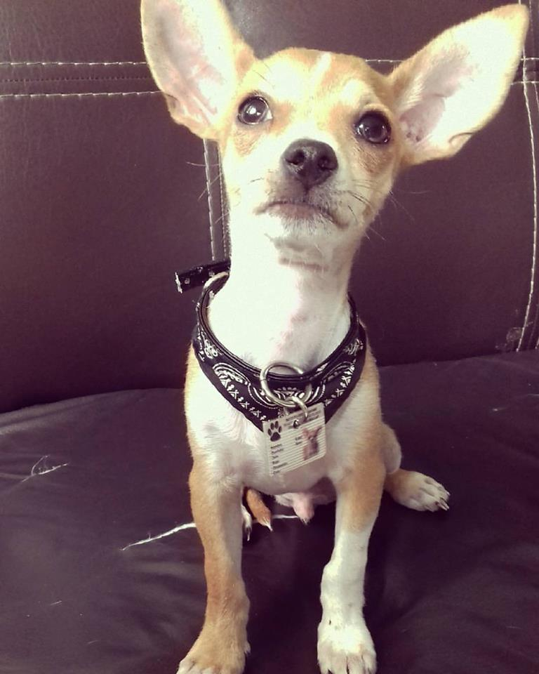
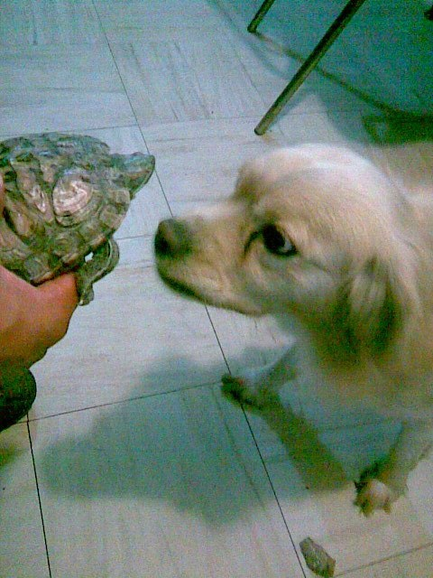

DOGGY
El grandulon de la casa , es un perro muy especial ya que me vino a cambiar la vida . Es mi perrhijo mayor y esta entrando a la etapa de vejez apenas tiene 10 añitos y espero sea eterno . No sabemos que raza es , eso se debe a que fue recogido de la calle , pero si lo vez es muy precioso , no es muy social y es muy celoso de su familia! Lo AMO

CHEWIE
El peque de la familia , tiene apenas 6 meses de vida , pero es increible que a pesar de su tamaño no tiene complejos ante perros mas grandes que el . Su raza chihuahueño (cabeza de venado), es muy hiperactivo y bastante mordelon, es muy temperamental y anda conmigo para todos lados , el pienza que soy de su propiedad. Es la adoracion de todos , menos de Doggy.

LA BEBÉ
Una tortuga media enojona, pero muy querida , tiene 13 años y fue mi primera mascota, desconocemos si es hembra o macho . Odia que la molesten y que la bañen , le encanta esconderse y a veces se pierde por meses, pero siempre regresa cuando tiene hambre. Para nada se lleva bien con los perros , siempre la molestan. Nuestra relacion es rara , siento que no me quiere , al unico que le hace caso es a mi Papá .